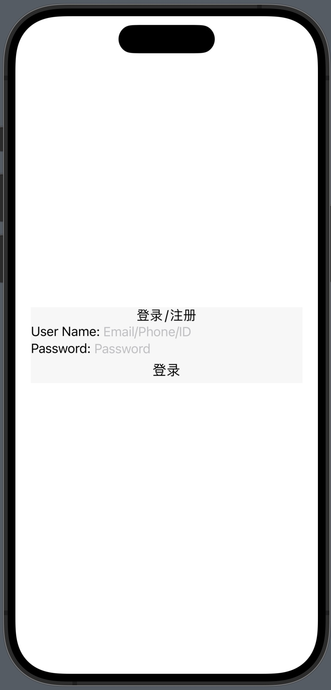

UIStackView 是 iOS 9.0 引入的一个用户界面组件，它继承自 UIView。UIStackView 使得开发者能够通过简单的方式来布局一系列的子视图（称为 arrangedSubviews），无需直接操作 Auto Layout 约束。通过自动管理视图的布局约束，UIStackView 极大地简化了布局的复杂性，提高了开发效率，并有助于创建更加响应式和适应性强的用户界面。它的使用减少了布局代码，提高了代码的可读性和可维护性，并且易于实现动态内容的适应性。
UIStackView 简介
UIStackView 的工作原理
- 自动布局：
UIStackView使用 Auto Layout 自动为其子视图创建布局约束，这些子视图在栈中水平或垂直排列。 - 视图管理：它管理
arrangedSubviews的布局，但不是所有的子视图。只有添加到arrangedSubviews数组中的视图才会受到UIStackView布局的管理。
UIStackView 的关键属性
axis：确定是水平（.horizontal）还是垂直（.vertical）排列子视图。distribution：定义子视图在栈中如何分布，例如均匀填充（.fillEqually）、根据比例（.fillProportionally）等。alignment：定义子视图在与轴线垂直的方向上如何对齐，例如居中（.center）、填充（.fill）等。spacing：定义子视图之间的间距。
UIStackView 的优点
- 简化布局：自动管理布局约束，简化了布局流程。
- 易于维护：减少了布局代码，提高了代码的可读性和可维护性。
- 适应性：方便地适应屏幕尺寸的变化，有助于创建响应式设计的界面。
UIStackView 是一个功能强大的布局工具，它通过自动化的布局管理简化了用户界面的开发，使得视图的排列和维护变得更加直观和高效。它是实现快速、灵活和可维护布局的首选方法之一。
一个例子
接下来，我们将通过实现一个简单的用户登陆界面并不断优化代码，来展示 UIStackView 的优雅与强大。
一个简单的登录界面
我们将从创建一个基础的用户登录界面开始，逐步增加其内容：
- 首先，顶部展示“登录 / 注册”；
- 接着，添加两个用于输入用户名和密码的控件，左侧显示输入提示，右侧为输入框；
- 最后，添加一个登录 / 注册按钮。
我们编写如下代码，将上述所有控件加入一个 UIStackView 之中1：
// FILE: ViewController.swift
import Foundation
import UIKit
import SnapKit
class StackViewController: UIViewController {
lazy var stackView = {
let stackView = UIStackView()
stackView.axis = .vertical
stackView.distribution = .equalSpacing
stackView.alignment = .fill
stackView.backgroundColor = .lightGray.withAlphaComponent(0.1)
return stackView
}()
override func viewDidLoad() {
super.viewDidLoad()
view.backgroundColor = .white
view.addSubview(stackView)
stackView.snp.makeConstraints { make in
make.left.equalTo(20)
make.right.equalTo(-20)
make.centerY.equalToSuperview()
}
stackView.addArrangedSubview(createSingleLineText("登录 / 注册"))
stackView.addArrangedSubview(createCommonInput(label: "User Name:",
placeHolder: "Email/Phone/ID",
onTextChanged: { text in
print("User Name: \(String(describing: text))")}))
}
stackView.addArrangedSubview(createCommonInput(label: "Password:",
placeHolder: "Password",
onTextChanged: { text in
print("Password: \(String(describing: text))")}))
}
stackView.addArrangedSubview(createButton(title: "登录", onTapped: nil))
}
func createSingleLineText(_ title: String) -> UILabel {
let label = UILabel()
label.textAlignment = .center
label.text = title
return label
}
func createCommonInput(label: String,
placeHolder: String?,
onTextChanged: ((String?) -> Void)?) -> UIView {
let view = UIView()
let promptLabel = UILabel()
promptLabel.textAlignment = .left
promptLabel.text = label
view.addSubview(promptLabel)
promptLabel.snp.makeConstraints { make in
make.centerY.equalToSuperview()
make.left.equalTo(0)
}
promptLabel.setContentHuggingPriority(.required, for: .horizontal)
promptLabel.setContentCompressionResistancePriority(.required, for: .horizontal)
let textFiled = UITextField()
textFiled.placeholder = placeHolder ?? ""
view.addSubview(textFiled)
textFiled.snp.makeConstraints { make in
make.left.equalTo(promptLabel.snp.right)
make.right.equalTo(0)
make.centerY.equalToSuperview()
make.top.equalTo(0)
make.bottom.equalTo(0)
}
return view
}
func createButton(title: String, onTapped: (() -> Void)?) -> UIButton {
let button = UIButton()
button.setTitle(title, for: .normal)
button.setTitleColor(.label, for: .normal)
return button
}
}
#Preview {
StackViewController()
}
第 29 至 40 行是向 UIStackView 添加子控件的代码。之后的三个函数 createSingleLineText(_:) -> UILabel, createCommonInput(label:placeHolder:onTextChanged:) -> UIView 和 createButton(title:onTapped:) -> UIButton 分别创建了三种不同类型的子控件。
运行得到结果如下：

继续添加新的控件类型
我们注意到，“登录 / 注册”顶部仅为文字，需要创建可点击区域以实现“登录”和“注册”的点击功能，我们计划使用 UISegmentedControl 来实现。同时，需求变更要求我们添加一个“记住用户名”的选项，以便用户下次登录时用户名可以直接显示在输入框中，这里将只考虑 UI 的实现，背后的功能将在后续章节讨论。另外，目前每行控件之间的距离过小，需要增加适当的间距。
因此我们继续向代码中添加相应的内容2：
// FILE: ViewController.swift
class StackViewController: UIViewController {
lazy var stackView = {
let stackView = UIStackView()
stackView.axis = .vertical
stackView.distribution = .equalSpacing
stackView.alignment = .fill
stackView.backgroundColor = .lightGray.withAlphaComponent(0.1)
stackView.spacing = 10 // 加入固定间隙
return stackView
}()
override func viewDidLoad() {
// .. 省略一些代码..
// 这里替换掉原来的 createSingleLineText
stackView.addArrangedSubview(createSegmentedControl(items: ["登录", "注册"],
defaultIndex: 0,
onTapped: nil))
stackView.addArrangedSubview(createCommonInput(label: "User Name:",
placeHolder: "Email/Phone/ID",
onTextChanged: { text in
print("User Name: \(String(describing: text))")}))
}
stackView.addArrangedSubview(createCommonInput(label: "Password:",
placeHolder: "Password",
onTextChanged: { text in
print("Password: \(String(describing: text))")}))
}
// checker
stackView.addArrangedSubview(createChecker(title: "记住用户名",
checked: false,
onTapped: { checked in
print("checked: \(checked)")}))
stackView.addArrangedSubview(createButton(title: "登录", onTapped: nil))
}
// .. 省略一些代码..
func createSegmentedControl(items: [Any], defaultIndex: Int, onTapped: ((Int) -> Void)?) -> UISegmentedControl {
let segment = UISegmentedControl(items: items)
segment.selectedSegmentIndex = defaultIndex
segment.rx.selectedSegmentIndex.skip(1).subscribe(onNext: { index in
onTapped?(index)
})
return segment
}
func createChecker(title: String, checked: Bool, onTapped: ((Bool) -> Void)?) -> UIView {
let checkerControl = UIControl()
checkerControl.isSelected = checked
let imageName = checked ? "checkmark.circle.fill" : "checkmark.circle"
let iconImageView = UIImageView(image: UIImage(systemName: imageName))
checkerControl.addSubview(iconImageView)
let label = UILabel()
label.text = title
label.textColor = .tertiaryLabel
label.font = UIFont.preferredFont(forTextStyle: .footnote)
checkerControl.addSubview(label)
label.snp.makeConstraints { make in
make.top.equalToSuperview()
make.bottom.equalToSuperview()
make.right.equalToSuperview()
make.left.equalTo(iconImageView.snp.right).offset(5)
}
label.setContentHuggingPriority(.required, for: .vertical)
label.setContentHuggingPriority(.required, for: .horizontal)
label.setContentCompressionResistancePriority(.required, for: .vertical)
label.setContentCompressionResistancePriority(.required, for: .horizontal)
iconImageView.snp.makeConstraints { make in
make.left.equalToSuperview()
make.top.equalTo(label.snp.top)
make.bottom.equalTo(label.snp.bottom)
make.width.equalTo(iconImageView.snp.height)
}
return checkerControl
}
}
这里我们增加 createSegmentedControl(items:defaultIndex:onTapped:) -> UISegmentedControl 函数用来生成 UISegmentedControl 子控件；增加 createChecker(title:, checked:, onTapped:) -> UIView 函数用来生成 checker 子控件。
代码运行效果如下：

似乎哪里不对？
到目前为止，即使我们已经添加了新的控件类型并解决了一些问题，使代码能够正常运行，但在代码架构上仍然存在一些严重问题：
- 虽然子控件的创建被封装进了各自的 createXXXX 函数之中，但它们仍然是
StackViewController的函数，导致生成子控件的行为与 View Controller 耦合。 - 调用
addArrangedSubview向 UIStackView 添加子控件的行为写在了viewDidLoad函数中，添加子控件的行为同样与 View Controller 耦合。
因此，生成和添加子控件的行为与 View Controller 紧密绑定，这段使用 UIStackView 的代码几乎无法进一步扩展功能或在其他界面复用。
“简单”重构一下
为了解决上述的耦合问题，我们可以考虑将代码进行更细粒度的分解，以便在其他界面能够复用生成和添加子控件的功能。这样一来，我们可以将生成和添加子控件的逻辑独立出来，形成一个单独的模块，这样其他界面只需引用该模块类，即可无需重复编写相同的代码。这样不仅能够减少代码的重复性，提高开发效率，还能够降低代码之间的耦合度，使得系统更加灵活和可扩展。同时，我们还可以考虑采用设计模式中的工厂模式来进一步优化代码的结构，使得生成和添加子控件的功能更加灵活和易于扩展。通过这些方法，我们能够更好地解决上述的耦合问题，提高代码的质量和可维护性。
拆分子控件的创建过程
首先，考虑到生成子控件的功能，我们已经将每个子控件的创建过程分解为独立的函数。如果我们将这些函数移到一个工厂类中，就可以实现解耦和复用的目的3。
// FILE: StackViewExtention.swift
struct ConcreteElementGenerator {
func createSingleLineText(_ title: String) -> UILabel {
let label = UILabel()
// ....
return label
}
func createCommonInput(label: String,
placeHolder: String?,
onTextChanged: ((String?) -> Void)?) -> UIView {
let view = UIView()
// ....
return view
}
func createButton(title: String, onTapped: (() -> Void)?) -> UIButton {
let button = UIButton()
// ....
return button
}
func createSegmentedCountrol(items: [Any], defaultIndex: Int, onTapped: ((Int) -> Void)?) -> UISegmentedControl {
let segment = UISegmentedControl(items: items)
// ....
return segment
}
func createChecker(title: String, checked: Bool, onTapped: ((Bool) -> Void)?) -> UIView {
let checkerControl = UIControl()
// ....
return checkerControl
}
}
在上述代码中，我们定义了一个 ConcreteElementGenerator 结构体，其中实现了所有子控件的创建功能。为了处理控件的触摸事件，我们采用了 RxSwift 来绑定事件和响应，但这并非必须，你也可以使用其他任何技术来实现此目的。
此时的 View Controller：
// FILE: StackViewController.swift
class StackViewController: UIViewController {
// 1
lazy var generator: ConcreteElementGenerator = {
return ConcreteElementGenerator()
}()
override func viewDidLoad() {
// ....
// 2
setupSubviews()
}
func setupSubviews() {
// ....
// 3
stackView.addArrangedSubview(generator.createButton(title: "登录", onTapped: nil))
// ....
}
}
- StackViewController 增加
generator属性 viewDidLoad函数中添加子控件的代码，移入新增的setupSubviews函数中- 生成子控件的行为变成了调用
generator的函数
我们将子控件生成的功能转移到 ConcreteElementGenerator 结构体中，从而使其与 View Controller 解耦，使得其他界面也可以复用这部分功能。当需要修改 UI 样式以适应需求变更时，我们只需替换为其他类型的 generator 即可。同时，StackViewController 类的代码也变得更加简洁，避免了 View Controller 代码过度膨胀。
拆分子控件的添加过程
下面我们考虑添加子控件。在开始之前，让我们先回顾一下代码的执行过程：
- 首先，我们需要确定界面上需要显示哪些控件；
- 接着，我们按照需求生成子控件，为每个子控件设计样式并添加事件响应；
- 最后，我们将生成的子控件添加到 UIStackView 上。
除了已经分解的子控件生成过程，其他两个步骤都在 setupSubviews 函数中执行，这两个步骤仍然紧密耦合。也就是说，我们确定需要显示哪些控件以及将控件添加到 UIStackView 的过程，仍然是直接编码堆砌在一起的。
由于确定显示内容的代码逻辑直接决定了子控件的样式和事件响应，这部分代码都需要直接调用子控件的 API。那么，如何将这两个步骤分解开呢？我们需要的是一个能描述控件样式但不直接调用控件 API 的结构。当然，控件 API 需要调用，但这个调用不应发生在 setupSubviews 函数中。我们将找到一个合适的位置进行调用，但更重要的是找到一种更合理的结构来描述控件的样式。
我们可以把每一种子控件都看作是一种元素 (element)，不同的元素类别决定了它们的样式和可响应的事件。不同类型的元素可以处理不同的事件，例如，按钮类型的元素可以响应点击事件，而输入框类型的元素可以处理用户输入的文本。同一类型的元素之间的差异仅仅在于展示的内容，比如，我们可以让两个按钮类型的元素分别显示为“登录”和“注册”，以区分它们的功能。
我们使用 枚举表示这种结构，用不同的枚举值表示不同的控件类型，用关联值表示样式和事件响应4。
// FILE: StackViewExtention.swift
enum ElementType {
/// 居中的文字
/// - Parameters:
/// - title: 居中显示的文字
case centeredText(title: String)
/// 输入框
/// - Parameters:
/// - label: 左侧说明文字
/// - placeHolder: 输入框中的提示文字
/// - onTextChanged: 文本发生改变时的回调
case commonInput(label: String, placeHolder: String?, onTextChanged: ((String?) -> Void)?)
/// 按钮
/// - Parameters:
/// - title: 按钮文字
/// - onTapped: 按钮点击回调
case button(title: String, onTapped: (() -> Void)?)
/// segment
/// - Parameters:
/// - items: 段列表
/// - defaultIndex: 默认选中的段
/// - onTapped: 点击回调
case segment(items: [Any], defaultIndex: Int, onTapped: ((Int) -> Void)?)
/// checker
/// - Parameters:
/// - title: checker 说明
/// - checked: 是否选中
/// - onTapped: 点击回调
case checker(title: String, checked: Bool, onTapped: ((Bool) -> Void)?)
}
Swift 语言的枚举完美地解决了我们的问题，接下来继续改造 ConcreteElementGenerator。我们为 ConcreteElementGenerator 添加一个 elementView(from element:) -> UIView 函数，这个函数接收一个 ElementType 类型的枚举值，调用之前完成的工厂函数，创建对应类型的子控件之后将其返回：
// FILE: StackViewExtention.swift
private extension ConcreteElementGenerator {
func elementView(from element: ElementType) -> UIView {
switch element {
case let .centeredText(title: title):
return createSingleLineText(title)
case let .commonInput(label: label, placeHolder: placeHolder, onTextChanged: onTextChanged):
return createCommonInput(label: label, placeHolder: placeHolder, onTextChanged: onTextChanged)
case let .button(title: title, onTapped: onTapped):
return createButton(title: title, onTapped: onTapped)
case let .segment(items: items, defaultIndex: defaultIndex, onTapped: onTapped):
return createSegmentedCountrol(items: items, defaultIndex: defaultIndex, onTapped: onTapped)
case let .checker(title: title, checked: checked, onTapped: onTapped):
return createChecker(title: title, checked: checked, onTapped: onTapped)
}
}
func createSingleLineText(_ title: String) -> UILabel {
// ....
}
func createCommonInput(label: String,
placeHolder: String?,
onTextChanged: ((String?) -> Void)?) -> UIView {
// ....
}
// ....
}
同时向 ConcreteElementGenerator 中增加一个 addArrangedElements 函数：
struct ConcreteElementGenerator {
// 1
private weak var base: UIStackView?
init(base: UIStackView? = nil, disposeBag: DisposeBag = DisposeBag()) {
self.base = base
self.disposeBag = disposeBag
}
// 2
func addArrangedElements(_ elements: [ElementType]) {
guard let stackView = base else {
return
}
for element in elements {
let subview = elementView(from: element)
stackView.addArrangedSubview(subview)
}
}
}
- 为了向 UIStackView 中添加子控件，这里需要弱持有我们的操作对象
- 此函数把一个
ElementType类型的数组转换为一组子控件，并逐个添加到 UIStackView
至此，我们完成了“将生成的子控件添加到 UIStackView 上”的功能。我们再来考察“确定界面上需要显示的控件”的功能：
// FILE: StackViewController.swift
class StackViewController: UIViewController {
lazy var stackView = {
// ....
return stackView
}()
lazy var generator: ConcreteElementGenerator = {
// 1
return ConcreteElementGenerator(base: stackView)
}()
override func viewDidLoad() {
// ....
setupSubviews()
}
func setupSubviews() {
// 2
let elementList: [ConcreteElementGenerator.ElementType] = [
.segment(items: ["登录", "注册"], defaultIndex: 0, onTapped: nil),
.commonInput(label: "User Name:", placeHolder: "Email/Phone/ID", onTextChanged: { text in
print("User Name: \(String(describing: text))")
}),
.commonInput(label: "Password:", placeHolder: "Password", onTextChanged: { text in
print("Password: \(String(describing: text))")
}),
.checker(title: "记住用户名", checked: false, onTapped: { checked in
print("checked: \(checked)")
}),
.button(title: "登录", onTapped: nil)
]
// 3
generator.addArrangedElements(elementList)
}
}
- 生成
ConcreteElementGenerator时传入一个UIStackView，以便在addArrangedElements函数中调用它 - 生成一个
ElementType类型的数组即完成了界面样式和事件响应的构建 - 调用
addArrangedElements生成并添加定义好的子控件
至此，我们只需声明 ElementType 并传递参数，即可确定子控件的样式和响应。这样的设计使得在使用 UIStackView 和 ConcreteElementGenerator 时，我们不再需要关心任何实现细节。现在，在 View Controller 中，我们只需生成枚举值列表并确定具体参数，这是一个非常重要的进步。通过这种方式，我们能够更加丰富地 ** 定制 ** 子控件的外观和行为，使得我们可以灵活地创建绚丽多样的界面。无论是改变按钮的颜色、调整标签的字体大小，还是设置文本框的边框样式，都可以通过传递不同的参数来实现。这样的设计模式极大地简化了界面开发的流程，提高了代码的可读性和维护性。
再新增一种控件
在之前的代码中，我们设置了 UIStackView 的 spacing 属性，为所有子控件设置了相同的间距。但实际需求通常更复杂，我们经常需要为不同的控件设置不同的间距。虽然可以使用 setCustomSpacing(_ spacing:, after arrangedSubview:) 函数，但这会使事情变得更复杂（主要是我们需要关注 spacing 前后的两个 subview ）。另一个更直观的解决方案是，在需要设置间距的两个子控件之间添加一个固定高度的透明 view。
现在，我们可以尝试使用新武器了。在实现细节中，我们需要新增一种枚举值用来表示“一个固定高度的透明 view”5：
// FILE: StackViewExtention.swift
enum ElementType {
// ....
// 1
/// 占位
/// - Parameters:
/// - height: 占位高度
case spacer(height: CGFloat)
}
struct ConcreteElementGenerator {
// ....
func addArrangedElements(_ elements: [ElementType]) {
guard let stackView = base else {
return
}
for element in elements {
let subview = elementView(from: element)
stackView.addArrangedSubview(subview)
// 2
configureView(subview, for: element)
}
}
}
private extension ConcreteElementGenerator {
func elementView(from element: ElementType) -> UIView {
switch element {
// ....
case let .spacer(height: height):
return createSpacer(height: height)
}
}
// 3
func configureView(_ view: UIView, for element: ElementType) {
switch element {
case let .spacer(height: height):
view.snp.makeConstraints { make in
make.height.equalTo(height)
}
default: break
}
}
// ....
// 4
func createSpacer(height: CGFloat) -> UIView {
return UIView()
}
}
- 新增一个 spacer 类型的枚举值。
- 添加子控件的代码比原来更复杂。因为我们添加的子控件是一个固定高度的 view，而之前处理的所有子控件的高度都是根据其内容自动设置的，我们从未显式设置过 view 的高度。而我们新增的 spacer 类型的子控件恰好需要显式设置高度。使用 Auto layout 布局的 view 必须在被添加到 superview 之后才能设置约束，因此我们在这里需要新增一个函数调用，专门处理 view 被添加到 superview 之后才能进行的操作。
- 在
configureView函数中，为 spacer 类型的子控件设置高度。 - 生成 spacer 类型的子控件。
从调用方的角度看，增加间距的操作异常简单，只需在原有的 ElementType 列表中加入几个确定高度的 spacer：
// FILE: StackViewController.swift
class StackViewController: UIViewController {
// ....
func setupSubviews() {
let elementList: [ConcreteElementGenerator.ElementType] = [
.segment(items: ["登录", "注册"], defaultIndex: 0, onTapped: nil),
.spacer(height: 15),
.commonInput(label: "User Name:", placeHolder: "Email/Phone/ID", onTextChanged: { text in
print("User Name: \(String(describing: text))")
}),
.spacer(height: 15),
.commonInput(label: "Password:", placeHolder: "Password", onTextChanged: { text in
print("Password: \(String(describing: text))")
}),
.spacer(height: 10),
.checker(title: "记住用户名", checked: false, onTapped: { checked in
print("checked: \(checked)")
}),
.spacer(height: 10),
.button(title: "登录", onTapped: nil)
]
generator.addArrangedElements(elementList)
}
}
代码执行效果如下：
总结
UIStackView 是一个强大且易用的控件，它可以帮助开发者更方便地布局界面。它可以将多个视图按照水平或垂直方向进行排列，并自动处理视图之间的间距和大小。通过使用本文提出的方法，开发者可以将界面样式和事件响应的声明与具体实现分离，实现了解耦和复用。这种方法可以提高开发效率，并且使得界面的修改和调整更加灵活和方便。
-
https://gist.github.com/ltryee/2ce6bfc12974e3f3e4f82f51e77f1796 ↩
-
https://gist.github.com/ltryee/00bbfb2529dcc9268b1bd6d3da4bb599 ↩
-
https://gist.github.com/ltryee/747af2df3eea4d05d7f31ee7a19074f0 ↩
-
https://gist.github.com/ltryee/44f1cd2909ccfc328550c582135e8ff8 ↩
-
https://gist.github.com/ltryee/4008aba869c17f31f89e33b55585d7c4 ↩
本文由 Ltryee
创作，采用 知识共享署名4.0 国际许可协议进行许可
本站文章除注明转载/出处外，均为本站原创或翻译，转载前请务必署名
最后编辑时间为: 2023-12-22T23:57:34+08:00